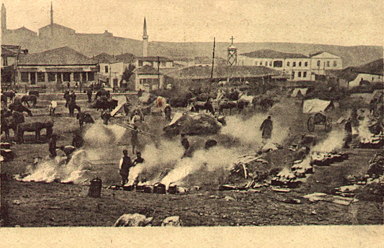
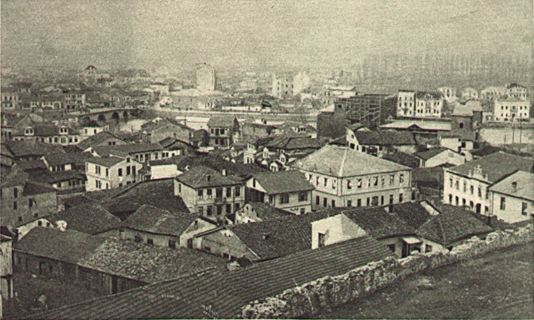
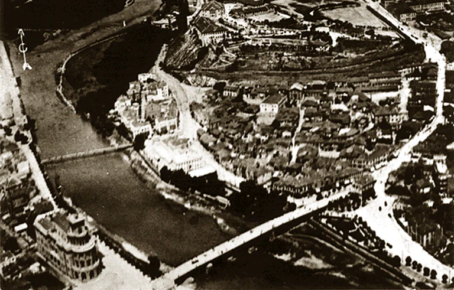

Skopje 1916 - 1917 Panorama 2
Dokumente aus den Balkankriegen
- Jahr
- 1916-1917
- Dauer
- 00:12

Skopje gegen Ende des 19. Jahrhunderts. Blick auf die unbebauten Flächen des neuen Viertels am rechten Ufer des Vardar. Im Hintergrund die Stadtfestung - Kale. Rechts der Hügel Gazi Baba.

Ende des 19. Jahrhunderts. Die unbebauten Flächen am rechten Ufer des Vardar. Nur wenige Häuser direkt am Fluss. Im Hintergrund erhebt sich die Festung von Skopje - Kale.

Skopje 1888, vom Hügel Gazi Baba zur Festung von Skopje - Kale hin fotografiert.

Blick vom Uhrturm auf den nördlichen Teil von Skopje mit den alten türkischen und mazedonischen Vierteln. Im Hintergrund der Hügel Gazi Baba. (Ende des 19. Jahrhunderts)

Skopje - Blick auf den alten Teil mit dem alten Basar. Im Hintergrund die Mustafa-Pascha-Moschee, rechts davon die Festung von Skopje - Kale mit den Kasernen. Im Vordergrund Wohnhäuser im Viertel Gazi Baba - Ende des 19. Jahrhunderts.

Skopje, Anfang des 20. Jahrhunderts. Blick vom Uhrturm auf das alte öffentliche, Handels- und Handwerkszentrum mit dem Basar. Neue Architekturformen in der alten Stadtstruktur. Im Hintergrund dominieren die Mustafa-Pascha-Moschee und die Stadtfestung mit den Kasernen. Darunter die Pascha-Jigit-Beg-Moschee, die älteste Moschee Skopjes (heute nicht mehr vorhanden).

Blick von der Festung von Skopje - Kale zum Berg Vodno. Direkt unterhalb der Kale liegt das jüdische Viertel. Zu sehen sind der Vardar und die Steinbrücke, gleich daneben die Burmali-Moschee
- Anfang des 20. Jahrhunderts.

Blick von der Festung von Skopje - Kale zum Berg Vodno. Direkt unterhalb der Kale liegt das jüdische Viertel. Zu sehen sind der Vardar und die Steinbrücke, gleich daneben die Burmali-Moschee
- Anfang des 20. Jahrhunderts.

Blick auf das jüdische Viertel und die Stadt von der Festung von Skopje - Kale. Im Vordergrund die Synagoge (ohne Dach). Rechts die Steinbrücke - Anfang des 20. Jahrhunderts.

Blick von der Festung von Skopje - Kale zur Steinbrücke und zur Burmali-Moschee. Interessant ist auf diesem Foto, wie wenig sich die Stadt am rechten Ufer des Vardar ausgedehnt hatte. Das Foto entstand gegen Ende des 19. Jahrhunderts. Weit im Hintergrund die Brauerei, oder wie man sie damals nannte, die „Birarija“. Im Vordergrund ein Teil des jüdischen Viertels.

Panoramaansicht des zentralen Stadtgebiets vom Ende des 19. Jahrhunderts. In der Mitte das türkische Theater. Am rechten Ufer des Vardar, gleich neben der Steinbrücke, ist die Burmali-Moschee zu sehen.

Das Foto wurde vor dem Ersten Weltkrieg von den Mauern der Festung von Skopje - Kale aufgenommen. Am Fuß die Wohnhäuser des jüdischen Viertels, die Schule und die Synagoge. Links die Kirche Hl. Demetrius.

Panoramaaufnahme von der Festung von Skopje - Kale Anfang des 20. Jahrhunderts. Im Vordergrund einige Soldaten aus dem Kasernengelände. Am Fuß sieht man Häuser des jüdischen Viertels und des Viertels Pajko, dann die Steinbrücke und gleich daneben die Burmali-Moschee. Weiter dahinter der neue Teil Skopjes, in der Ferne zeichnet sich die Brauerei ab.

Blick von der Festung von Skopje - Kale zu den Bergen Vodno und Kitka. Im Mittelgrund ist die Steinbrücke zu sehen, direkt daneben die Burmali-Moschee.

Skopje während des Ersten Weltkriegs. Auf dem Foto ist ein Lager der serbischen Armee nahe der Kirche Sveti Spas zu sehen, deren Glockenturm im Hintergrund steht.

Panorama von Skopje - 1920er Jahre. Am Fuß das jüdische Viertel mit der Schule und der Synagoge. Zu sehen ist der Bau des Nationaltheaters.

Panoramabild von Skopje (um 1920). Interessant ist auf diesem Foto der Berg Vodno, genauer seine „Kahlheit“, im Gegensatz zu heute, wo er reich an herrlichen Wäldern ist. Die Aufforstung erfolgte nach dem Zweiten Weltkrieg durch organisierte Jugendaktionen. Im Vordergrund das jüdische Viertel mit der Synagoge und der jüdischen Schule.

Blick auf die Stadt Skopje von der Festung von Skopje - Kale. Im Vordergrund das jüdische Viertel mit der Synagoge, der Schule und dem Nationaltheater. Links im Bild die Steinbrücke und das im Bau befindliche Offiziersheim - 1920er Jahre.

Skopje, 1920er Jahre. Blick von der Festung von Skopje - Kale auf das jüdische Viertel.

Panoramafoto von Skopje, von Gazi Baba zur Festung von Skopje - Kale hin. (Anfang des 20. Jahrhunderts)

Die Mustafa-Pascha-Moschee im Hintergrund, darunter teilweise sichtbar die Pascha-Jigit-Beg-Moschee, die älteste Moschee Skopjes. (heute nicht mehr vorhanden)

Blick auf Skopje von Gazi Baba. Im Vordergrund die kleinteilige Bebauung der Wohnviertel. Im Hintergrund die Mustafa-Pascha-Moschee und die Kasernen im südlichen und nördlichen Teil der Stadtfestung - Kale.

Blick auf den alten Teil der Stadt am linken Ufer des Vardar. Im Vordergrund private Wohnhäuser. In der Mitte der Komplex des alten Basars von Skopje. Im Hintergrund dominiert die Mustafa-Pascha-Moschee, dahinter das Stadtgefängnis und die Kasernen auf der Kale. Unterhalb der Mustafa-Pascha-Moschee die Pascha-Jigit-Beg-Moschee, die älteste Moschee Skopjes (heute nicht mehr vorhanden). (1920er Jahre)

Panorama der alten Stadtstruktur, verändert durch die Europäisierung und den Bau von Gebäuden mit klassischen, eklektischen und anderen Stilmerkmalen. Das Foto wurde vom Uhrturm zur Mustafa-Pascha-Moschee hin aufgenommen. Rechts die Festung von Skopje - Kale mit den Kasernen - 1920er Jahre.

Čair - ein alter Teil der Stadt (heute Gemeinde Čair). Im Vordergrund die Gazi-Isa-Beg-Moschee, im Hintergrund die Jahja-Pascha-Moschee. - um 1920

Panorama von Skopje - die linke Seite mit dem Viertel Čair und einem Teil von Gazi Baba. Im Vordergrund die Gazi-Isa-Beg-Moschee, im Hintergrund die Jahja-Pascha-Moschee. (1920er Jahre)

Der Uhrturm - erbaut 1566-72. Im Hintergrund die Gazi-Isa-Beg-Moschee und die Jahja-Pascha-Moschee - 1920er Jahre.

Panorama des alten Teils der Stadt, nach Gazi Baba hin. Blick von der Festung von Skopje - Kale. Ganz rechts die Sultan-Murad-Moschee, links davon der Uhrturm. In derselben Linie links die Gazi-Isa-Beg-Moschee - 1920er Jahre.

Panoramaansicht des zentralen Stadtgebiets. - 1920er Jahre.

Winterlandschaft im zentralen Stadtgebiet. Im Vordergrund chaotisch errichtete Gebäude, an deren Stelle später die Nationalbank gebaut wurde. Die Terrasse auf dem sichtbaren Teil des Gebäudes ist ein Sommerkino. Die zwei Pfosten am Ende halten die Leinwand, auf der freien Fläche standen Stühle für die Zuschauer. Oben links die Festung von Skopje - Kale. (1920er Jahre)

Luftaufnahme des zentralen Teils der Stadt (um 1928). Es dominieren das Offiziersheim, die Steinbrücke, das Nationaltheater und das jüdische Viertel. Flussaufwärts am Vardar die Holzbrücke, die zum Nationaltheater führt. Oben rechts ein Teil der Kale. Im Vordergrund ein Teil des Viertels Novo Maalo. Das Foto entstand im Sommer, denn der Fluss führt sehr wenig Wasser.

Luftaufnahme des zentralen Teils der Stadt (um 1928). Es dominieren das Offiziersheim, die Steinbrücke, das Nationaltheater und das jüdische Viertel. Flussaufwärts am Vardar die Holzbrücke, die zum Nationaltheater führt. Oben rechts ein Teil der Kale. Im Vordergrund ein Teil des Viertels Novo Maalo. Das Foto entstand im Sommer, denn der Fluss führt sehr wenig Wasser.

Panorama-Luftaufnahme von Skopje. Erfasst ist vor allem das rechte Ufer des Vardar, das vom Offiziersheim beherrscht wird. Rechts der Ristić-Palast. Davor der Platz mit einer gepflegten Grünanlage in der Mitte. Zu erkennen sind auch Pferdekutschen, für die der Platz der wichtigste Stand für den Personenverkehr war. Die Steinbrücke verbindet beide Ufer. Unten rechts das Nationaltheater - ein herrlicher Bau, dem viele alte Skopjoter nachtrauern.

Panoramaaufnahme des linken Teils der Stadt mit der Steinbrücke und den Vierteln: links das jüdische Viertel, rechts Pajko. Rechts der Brücke das Denkmal für die Gefallenen der Balkankriege vor der Osmanischen Bank. Im Hintergrund Teile von Moscheen und der Uhrturm sowie die Viertel Čair und Gazi Baba. (1920er Jahre)

Panoramabild von Skopje, genauer des linken Vardar-Kais mit einem Teil des jüdischen Viertels, dem Viertel Pajko und der Steinbrücke. (1920er Jahre)

Blick auf die Steinbrücke vom Turm des Offiziersheims. Direkt an der Brücke rechts befand sich die Praxis des Zahnarztes Dr. Ruben. Etwas weiter rechts das Gebäude der Osmanischen Bank. Dazwischen lag ein kleiner Platz mit einem Kutschenstand. In der Mitte des Platzes stand das Denkmal für die gefallenen Kämpfer - um 1927.

Blick auf die Steinbrücke vom Turm des Offiziersheims. Direkt an der Brücke rechts befanden sich die Praxis des Zahnarztes Dr. Ruben sowie die Landwirtschaftsbank. Rechts das Gebäude der Osmanischen Bank. Dazwischen lag ein kleiner Platz mit einem Kutschenstand. In der Mitte des Platzes stand das Denkmal für die Gefallenen der Balkankriege - um 1927.

Blick auf die Steinbrücke vom Turm des Offiziersheims. Direkt an der Brücke rechts befand sich die Praxis des Zahnarztes Dr. Ruben. Etwas weiter rechts das Gebäude der Osmanischen Bank. Dazwischen lag ein kleiner Platz mit einem Kutschenstand. In der Mitte des Platzes stand das Denkmal für die gefallenen Kämpfer - um 1927.

Blick zur Steinbrücke über den Vardar und auf einen Teil des linken Ufers, also zum Viertel Pajko, fotografiert vom Turm des Offiziersheims. Direkt an der Brücke rechts befand sich die Praxis des Zahnarztes Dr. Rubens. Rechts das Gebäude der Osmanischen Bank. Dazwischen lag ein kleiner Platz mit einem Kutschenstand. In der Mitte des Platzes stand das Denkmal für die Gefallenen der Balkankriege - um 1927.

Panoramaaufnahme - Blick auf die Steinbrücke, mit der Festung von Skopje - Kale im Hintergrund und dem jüdischen Viertel - 1920er Jahre.
.

Skopje nach 1930. Links die Nationalbank, rechts das Offiziersheim. Im Vordergrund ein Teil des Minaretts der Ibni-Pajko-Moschee und das Haus des Zahnarztes Dr. Ruben. Am kleinen Platz gab es eine Bäckerei mit dem besten Simit-Gebäck Skopjes und einen Kutschenstand für den Personenverkehr.

Blick auf den Vardar mit der Festung von Skopje - Kale; rechts zeichnet sich die Stadt ab. Zu sehen sind das Offiziersheim und die Nationalbank. - 1930er Jahre

Ein wunderbares Foto der Stadt und des Laufs des Vardar. Links die Festung von Skopje - Kale. In der Mitte das Offiziersheim und die Nationalbank. Rechts der Berg Vodno, in der Ferne die Umrisse des Kitka-Gebirges. - 1930er Jahre

Ein wunderbarer Blick auf den Lauf des Vardar mit dem Berg Vodno und dem Viertel Bunjakovec. Zu sehen sind das Offiziersheim und die Nationalbank. (1930er Jahre)

Blick auf das Viertel Bunjakovec - 1930er Jahre, mit einem Teil des Stadtparks rechts im Bild.

Ein Teil des neu errichteten Viertels Bunjakovec in den 1920er Jahren. Zu sehen sind zweigeschossige Bauten von schlichter Architektur.

Blick auf das Viertel Bunjakovec, 1930er Jahre.

Ansicht des Viertels Bunjakovec, das heute im zentralen Stadtgebiet liegt. Zu sehen ist eine Reihe planmäßig errichteter Wohnhäuser nach dem Bebauungsplan für Bunjakovec.

Eine wunderbare winterliche Panoramalandschaft. Das Foto wurde von der Festung von Skopje - Kale zum Berg Vodno hin aufgenommen. Rechts in der Mitte das Offiziersheim und die Wirtschafts- und Handelskammer.

Blick auf die Steinbrücke über den Vardar. Auf der anderen Flussseite: links die Nationalbank, rechts das Offiziersheim.

Panorama von Skopje - fotografiert von der Festung von Skopje - Kale. Zwei Gebäude dominieren: rechts das Offiziersheim, links die Nationalbank. Im Vordergrund das jüdische Viertel. (1930er Jahre)

Luftaufnahme des zentralen Teils der Stadt. Zu sehen ist der Platz mit dem Offiziersheim und der Nationalbank. Weiter oben das Nationaltheater und der kleine Holzsteg.

Luftaufnahme der Stadt. Zu sehen sind der Platz mit dem Offiziersheim, der Nationalbank, der Wirtschaftskammer, die Viertel - das jüdische Viertel und Pajko - sowie die Steinbrücke. Oben links die ganze Stadtfestung - Kale mit der Kaserne. Daneben die Mustafa-Pascha-Moschee, im Hintergrund zeichnet sich die Jahja-Pascha-Moschee ab.

Luftaufnahme der Kathedralkirche Hl. Muttergottes in Skopje, erbaut 1835 (in der Mitte, mit hohem Glockenturm), und der Kirche Hl. Mina von 1902 (links, mit zwei Glockentürmen). Die Umgebung ist das Viertel Pajko.

Skopje, 1930er Jahre. Der alte Teil der Stadt. Blick durch ein vergittertes Fenster eines alten türkischen Gebäudes.

Panorama der Stadt. Ganz links die Sultan-Murad-Moschee, rechts davon der Uhrturm. Ganz rechts die Gazi-Isa-Beg-Moschee. Im Hintergrund die Nationalbank und das Offiziersheim, dahinter erhebt sich der Berg Vodno. (1930er Jahre)

Panorama der Stadt. Im Hintergrund die Sultan-Murad-Moschee, rechts davon der Uhrturm. Ganz rechts die Gazi-Isa-Beg-Moschee. Im Hintergrund die Nationalbank und das Offiziersheim. (1930er Jahre)

Luftaufnahme der Stadt. Unten die Steinbrücke und das Offiziersheim. Flussaufwärts der kleine Holzsteg, der zum Nationaltheater und zum jüdischen Viertel führt. Oben die Festung von Skopje - Kale mit der Kaserne. Aufgenommen am 26. Juni 1933 um 10 Uhr morgens.

Unbebaute Freifläche vor dem heutigen Museum der Stadt Skopje. Links die Hotels „Bristol“ und „Srpski Kralj“ an der Hauptstraße, die zum Platz führt. An derselben Straße, in der Bildmitte, ist der Krang-Palast zu sehen. (1930er Jahre)

Luftaufnahme des Platzes. Im Vordergrund die Nationalbank von hinten, rechts davon die Wirtschafts- und Handelskammer. Gegenüber der Nationalbank das Offiziersheim. Rechts der Vardar und ein Teil der Steinbrücke. Flussaufwärts die Holzbrücke, die zum Nationaltheater führte, das ebenfalls oben rechts im Bild zu sehen ist.

Dokumente aus den Balkankriegen
 Aquädukt4 Postkarten
Aquädukt4 Postkarten Kale30 Postkarten
Kale30 Postkarten Brücken60 Postkarten
Brücken60 Postkarten Kai58 Postkarten
Kai58 Postkarten Platz46 Postkarten
Platz46 Postkarten Bauten66 Postkarten
Bauten66 Postkarten Christliche Gotteshäuser19 Postkarten
Christliche Gotteshäuser19 Postkarten Muslimische Bauten33 Postkarten
Muslimische Bauten33 Postkarten Offiziersheim29 Postkarten
Offiziersheim29 Postkarten Theater28 Postkarten
Theater28 Postkarten Bahnhof13 Postkarten
Bahnhof13 Postkarten Schulen36 Postkarten
Schulen36 Postkarten Parks12 Postkarten
Parks12 Postkarten Märkte18 Postkarten
Märkte18 Postkarten Straßen38 Postkarten
Straßen38 Postkarten Panorama I60 Postkarten
Panorama I60 Postkarten Panorama II30 Postkarten
Panorama II30 Postkarten Collagen55 Postkarten
Collagen55 Postkarten Hochwasser9 Postkarten
Hochwasser9 Postkarten Erdbeben27 Postkarten
Erdbeben27 Postkarten Skopje 200026 Postkarten
Skopje 200026 Postkarten